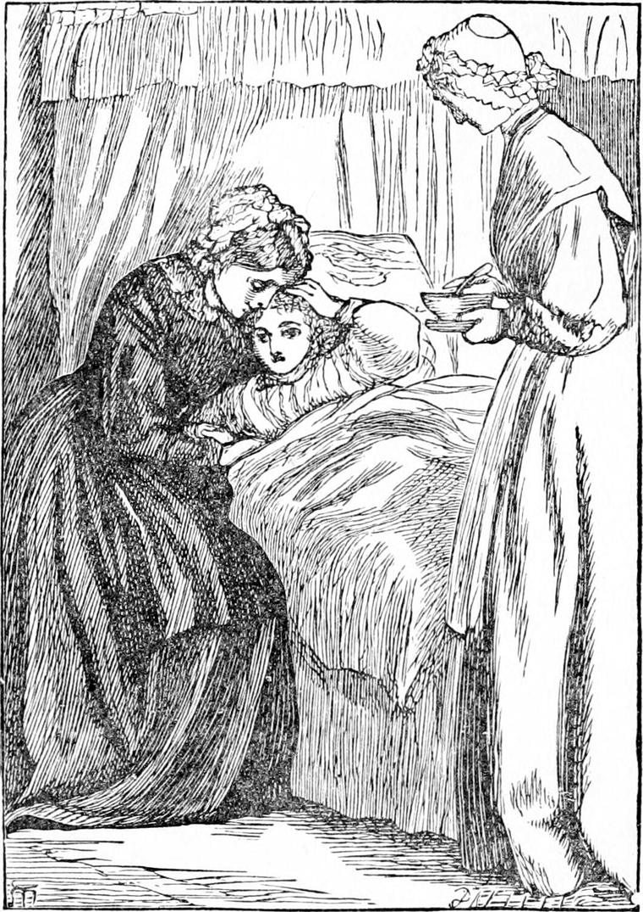
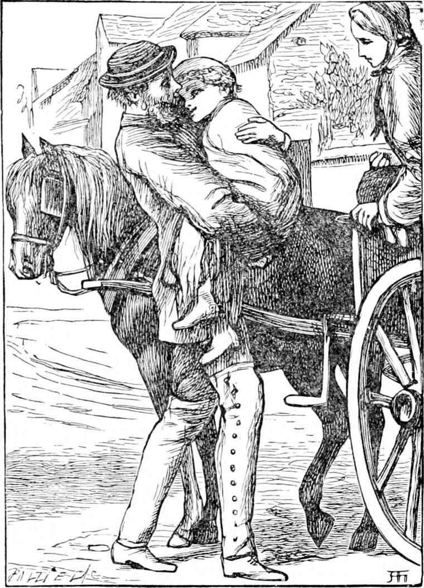

As THEY flew, so fast they went that the sea slid away from under them like a great web of shot silk, blue shot with grey, and green shot with purple. They went so fast that the stars themselves appeared to sail away past them overhead, “like golden boats,” on a blue sea turned upside down. And they went so fast that Diamond himself went the other way as fast—I mean he went fast asleep in North Wind's arms.
When he woke, a face was bending over him; but it was not North Wind's; it was his mother's. He put out his arms to her, and she clasped him to her bosom and burst out crying. Diamond kissed her again and again to make her stop. Perhaps kissing is the best thing for crying, but it will not always stop it.
“What is the matter, mother?” he said.
“Oh, Diamond, my darling! you have been so ill!” she sobbed.
“No, mother dear. I've only been at the back of the north wind,” returned Diamond.
“I thought you were dead,” said his mother.
But that moment the doctor came in.
“Oh! there!” said the doctor with gentle cheerfulness; “we're better to-day, I see.”
Then he drew the mother aside, and told her not to talk to Diamond, or to mind what he might say; for he must be kept as quiet as possible. And indeed Diamond was not much inclined to talk, for he felt very strange and weak, which was little wonder, seeing that all the time he had been away he had only sucked a few lumps of ice, and there could not be much nourishment in them.

Now while he is lying there, getting strong again with chicken broth and other nice things, I will tell my readers what had been taking place at his home, for they ought to be told it.
They may have forgotten that Miss Coleman was in a very poor state of health. Now there were three reasons for this. In the first place, her lungs were not strong. In the second place, there was a gentleman somewhere who had not behaved very well to her. In the third place, she had not anything particular to do. These three nots together are enough to make a lady very ill indeed. Of course she could not help the first cause; but if the other two causes had not existed, that would have been of little consequence; she would only have to be a little careful. The second she could not help quite; but if she had had anything to do, and had done it well, it would have been very difficult for any man to behave badly to her. And for this third cause of her illness, if she had had anything to do that was worth doing, she might have borne his bad behaviour so that even that would not have made her ill. It is not always easy, I confess, to find something to do that is worth doing, but the most difficult things are constantly being done, and she might have found something if she had tried. Her fault lay in this, that she had not tried. But, to be sure, her father and mother were to blame that they had never set her going. Only then again, nobody had told her father and mother that they ought to set her going in that direction. So as none of them would find it out of themselves, North Wind had to teach them.
We know that North Wind was very busy that night on which she left Diamond in the cathedral. She had in a sense been blowing through and through the Colemans' house the whole of the night. First, Miss Coleman's maid had left a chink of her mistress's window open, thinking she had shut it, and North Wind had wound a few of her hairs round the lady's throat. She was considerably worse the next morning. Again, the ship which North Wind had sunk that very night belonged to Mr. Coleman. Nor will my readers understand what a heavy loss this was to him until I have informed them that he had been getting poorer and poorer for some time. He was not so successful in his speculations as he had been, for he speculated a great deal more than was right, and it was time he should be pulled up. It is a hard thing for a rich man to grow poor; but it is an awful thing for him to grow dishonest, and some kinds of speculation lead a man deep into dishonesty before he thinks what he is about. Poverty will not make a man worthless—he may be worth a great deal more when he is poor than he was when he was rich; but dishonesty goes very far indeed to make a man of no value—a thing to be thrown out in the dust-hole of the creation, like a bit of a broken basin, or a dirty rag. So North Wind had to look after Mr. Coleman, and try to make an honest man of him. So she sank the ship which was his last venture, and he was what himself and his wife and the world called ruined.
Nor was this all yet. For on board that vessel Miss Coleman's lover was a passenger; and when the news came that the vessel had gone down, and that all on board had perished, we may be sure she did not think the loss of their fine house and garden and furniture the greatest misfortune in the world.
Of course, the trouble did not end with Mr. Coleman and his family. Nobody can suffer alone. When the cause of suffering is most deeply hidden in the heart, and nobody knows anything about it but the man himself, he must be a great and a good man indeed, such as few of us have known, if the pain inside him does not make him behave so as to cause all about him to be more or less uncomfortable. But when a man brings money-troubles on himself by making haste to be rich, then most of the people he has to do with must suffer in the same way with himself. The elm-tree which North Wind blew down that very night, as if small and great trials were to be gathered in one heap, crushed Miss Coleman's pretty summer-house: just so the fall of Mr. Coleman crushed the little family that lived over his coach-house and stable. Before Diamond was well enough to be taken home, there was no home for him to go to. Mr. Coleman—or his creditors, for I do not know the particulars—had sold house, carriage, horses, furniture, and everything. He and his wife and daughter and Mrs. Crump had gone to live in a small house in Hoxton, where he would be unknown, and whence he could walk to his place of business in the City. For he was not an old man, and hoped yet to retrieve his fortunes. Let us hope that he lived to retrieve his honesty, the tail of which had slipped through his fingers to the very last joint, if not beyond it.

Of course, Diamond's father had nothing to do for a time, but it was not so hard for him to have nothing to do as it was for Miss Coleman. He wrote to his wife that, if her sister would keep her there till he got a place, it would be better for them, and he would be greatly obliged to her. Meantime, the gentleman who had bought the house had allowed his furniture to remain where it was for a little while.
Diamond's aunt was quite willing to keep them as long as she could. And indeed Diamond was not yet well enough to be moved with safety.
When he had recovered so far as to be able to go out, one day his mother got her sister's husband, who had a little pony-cart, to carry them down to the sea-shore, and leave them there for a few hours. He had some business to do further on at Ramsgate, and would pick them up as he returned. A whiff of the sea-air would do them both good, she said, and she thought besides she could best tell Diamond what had happened if she had him quite to herself.